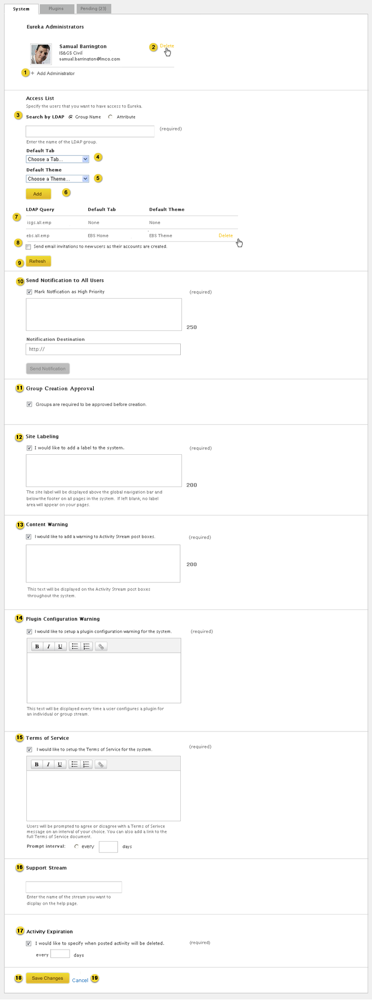

Home > Product Specification > Features > Manage system settings
Manage system settings
View and Search a Stream
Manage and receive notifications
Overview
The Eureka administrator can manage system settings. This
includes adding new users,
setting the content expiration length, and configuring a system label for the header/footers, a terms of service message, and stream plugin warning message.
Conditions of Satisfaction
System
- The Eureka administrator must be able to add colleagues as Eureka Administrators.
- The Eureka administrator must be able to control system access via a list of LDAP
groups or attributes.
- The Eureka administrator must be able to optionally associate a default tab or
theme from the gallery with any LDAP group or attribute.
- The Eureka administrator must have the option to send email invitations to
knowledge workers when their account is created.
- The system must periodically synchronize the access list.
- The Eureka administrator must be able to synchronize the access list on-demand.
- The Eureka administrator must have the option to configure a notification text
(limited to 250 characters, target link and whether of not it is high priority which is
sent to all users.
- The Eureka administrator must have the option to configure a system label displayed
in the header and footer.
- The Eureka administrator must have the option to configure a content warning
message displayed to a knowledge worker when posting an activity.
- The Eureka administrator must have the option to configure a stream plugin warning
message displayed to a knowledge worker when configuring a stream plugin for a stream.
- The Eureka administrator must have the option to configure a terms of service
message displayed at a configurable interval that must be confirmed by the knowledge worker.
- The Eureka administrator must be able to set the content expiration length between
1 and 365 days.
- The Eureka administrator must be able to configure the support stream.
- The Eureka administrator must have the option to require group creation approval.
Plugins
- The Eureka administrator must be able to upload a plugin that adheres to the Google
gadget specification and eureka stream plugin feature.
- The Eureka administrator must be able to publish and categorize a stream plugin
referenced by a URL.
- The Eureka administrator must be able to remove a published stream plugin.
Pending Items
- The Eureka administrator must be able to delete or allow an activity that has been flagged
as inappropriate.
- The Eureka administrator must be able to approve or deny pending group
creation requests.
User Experience
Systems Settings

- Eureka system administrators will be able to access the system settings via the Settings link in the header of their Eureka dashboard.

- Eureka administrators can be added by clicking on Add administrator. An employee lookup
modal pops up allowing the new Aaministrator to be picked.
- Clicking delete removes the administrator.
- Admins can select “Group Name” to enter an LDAP group name. The knowledge worker can select “Attribute” the message under the input box changes to: “Specify an LDAP attribute (in the format: attribute=value)”.
- Admins can optionally select a default tab from the gallery to appear for everyone within the access list’s start page.
- Admins can optionally select a default theme from the gallery to appear for everyone within the access list’s start page.
- Clicking the add button adds to the access list below. When a user enters a group name or attribute and clicks add a processing animation appear while the system validates the group or attribute. If the group or attribute is not found an error message is shown at the top of the section.
- Hovering over the group or attribute displays a Delete link allowing the Eureka Administrator
to delete the item. When the delete icon is clicked, a pop-up window is displayed asking the user if they are sure that they want to remove the item. If they click yes the item is removed and the other items move up.
- The Eureka administrator has the option to send welcome emails to users when their accounts
are created.
- Refreshes the system with the current access lists. Feedback displays at the top of the page with a close option: “Access List Refresh is now processing”. Refer to the Action Feedback UI design pattern for additional details. Access list refreshes and new users in the group or attribute are added to the database.
- Allows the admins to specify the notification to send to all users, including whether or not it’s high priority, the message and the target link. Links must start with http:// or https://
- Group Creation Approval allows the Eureka administrator to require approval of group requests before the group is automatically created.
- Site Labeling is disabled by default. When enabled the text box is required and supports up to 250 alpha numeric characters.
- Content Warning is disabled by default. When enabled the text box is required and supports up to 250 alpha numeric characters.
- Plugin Configuration Warning is disabled by default. When enabled the text box is required and the Plugin Configuration Warning rich text editor supports an infinite amount of characters.
- Terms of Service is disabled by default. When enabled the text box and prompt interval are required. Terms of Service rich text editor supports an infinite amount of characters. Days field supports up to 5 numeric characters.
- The Eureka administrator can enter the name of the group stream they want to specify by
clicking in the input box. As they type matches to individual or group streams are displayed in a drop down
menu. Entering or selecting a valid stream name removes the input box and displays the name
of the stream. The Eureka administrator can remove the stream by clicking the “x” button
next to the stream name which will display an empty input box. If the Eureka administrator enters an invalid
stream name and tries to save the changes to the page a warning message will be displayed saying “The stream you entered could not be found”. Field supports up to 50 characters (same length as group name in [View and manage a group profile][]
- Activity Expiration is disabled by default. When enabled the text box is required, supports a number between 1 and 365.
- Saves the edits made to the form and returns the knowledge worker to the start page. Feedback displays at the top of the page with a close option: “Settings saved”. Refer to the Action Feedback UI design pattern for additional details.
- Discards the changes made to the form and returns the Eureka administrator to the start
page.
Plugin System Settings
View Existing Plugins

- Allows the Eureka administrator to filter by Category.
- Hovering over the plugin icon or text displays the Delete link.Clicking the delete icon displays a pop-up window asking the administrator: “Are you sure you want to delete this plugin” if the administrator clicks “yes” the plugin is deleted and a warning message is displayed: “Stream plugin [insert name] has been deleted”. Refer to the Action Feedback UI design pattern for implementation specifics.
- Allows the Eureka administrator to Add a new plugin
Submit a Plugin

- Select a Category.
- Enter Plugin XML.
- Submits new plugin, returns user to the Plugin page and feedback displays at top of page with a close option: “Stream Plugin has been successfully added” Refer to the Action Feedback UI design pattern for additional details.
- Cancels plugin submission and returns user to the Plugin page.
Test Plans
System
- Verify the Eureka administrator can add colleagues as Eureka administrators
- Verify a Eureka administrator can be selected and added
- Verify a Eureka administrator can be deleted
- Verify an error message if no Eureka Administrators are selected
- Verify the Eureka administrator can control system access via a list of ldap groups or attributes
- Verify a Eureka administrator can add a Group Name (example: someaccountname = )
- Verify a Eureka administrator can delete a Group Name
- Verify an error message is displayed if a blank or invalid Group Name is entered
- Verify a Eureka administrator can add an Attribute
- Verify a Eureka administrator can delete an Attribute
- Verify an error message is displayed if a blank or invalid Attribute is entered
- Verify the Eureka administrator can specify a default tab or theme from the gallery and associate it with any lDAP Group or Attribute
- Verify the ability to choose a tab and associate it with an LDAP Group
- Verify the ability to choose a theme and associate it with an LDAP Group
- Verify the ability to choose both a tab and theme and associate it with an LDAP Group
- Verify the ability to choose a tab and associate it with an Attribute
- Verify the ability to choose a theme and associate it with an Attribute
- Verify the ability to choose both a tab and a theme and associate it with an Attribute
- Verify the ability to not choose a tab and/or theme associate with an LDAP Group or an Attribute
- Verify this functionality applies only to users being entered into the database for the first time.
- Verify this functionality applies to an individual as well as large groups.
- Verify the Eureka administrator has the option to send email invitations to knowledge workers when their account is created
- Verify the ability to send email invitation to knowledge workers when their account is create
- Verify the ability to not send email invitations to knowledge workers when their account is create
- Verify the system periodically synchronize the access list
- Verify the access list is synchronized
- Verify the Eureka administrator has the ability to synchronize the access list on-demand
- Verify the access list is synchronized
- Verify the Eureka administrator can configure notification text
- Verify the ability to send a notification to all users, without being marked as high priority
- Verify the ability to send a high priority notification to all users
- Verify that notifications are limited to 250 characters.
- Verify that feedback is provided regarding the numbers of characters in the notification
- Verify a 250 character limit for notifications
- Verify the ability to include a notification destination
- Verify the Eureka administrator can configure a system label displayed in the header and footer
- Verify the ability to enable or disable the system label displayed in the header and footer
- Verify when the option is enabled, a text input box displays, text is required and error handling is present if text is empty and the user attempts to submit
- Verify when the option is enabled and text is submitted, the text is displayed in the header and footer
- Verify when the option is disabled, the text box is hidden
- Verify when the option is disabled, there is no text displayed in the header and footer when submitted.
- Verify the Eureka administrator can configure a content warning message displayed to a knowledge worker when posting an activity
- Verify the ability to enable or disable displaying a content warning message when posting activity
- Verify when the content warning message is enabled, a text input box displays, text is required and error handling is present if text is empty and the user attempts to submit
- Verify when the option is enabled and the text is submitted, the text is displayed below the activity posting text box and commenting text box
- Verify when the option is disabled, the text box is hidden
- Verify when the option is disabled, there is no text displayed below the activity posting text box
- Verify when the option is disabled, there is no text displayed below the commenting text box
- Verify the Eureka administrator can configure a plugin warning message displayed to a knowledge worker when adding a plugin
- Verify the ability to enable or disable the plugin warning
- Verify that when the plugin warning is enabled a text input box displays, text is required and error handling is present if text is empty and the user attempts to submit
- Verify when the option is enabled and the text is submitted, the text is displayed in the Terms of Use for each plugin
- Verify when the option is disabled, the text box is hidden
- Verify when the option is disabled, there is no text displayed in the Terms of Use for each plugin
- Verify the Eureka administrator can configure a terms of service message displayed at a configurable interval that must be confirmed by the knowledge worker
- Verify the ability to enable or disable the terms of service
- Verify that when the terms of service is enabled:
- A text input box displays
- There is an option to choose to display the terms of service at a specific interval
- Verify when the option is enabled and the text is submitted, the text is displayed when launching the site at the intervals selected
- Verify when the option is disabled, the text box is hidden
- Verify when the option is disabled, there is no text displayed in the terms of service when launching the site at the intervals selected
- Verify the Eureka administrator can set the content expiration length between 1 and 365 days
- Verify the ability to enable or disable the activity expiration
- Verify that when the activity expiration is enabled a text input box displays and represents the number of days and a number is required
- Verify that when the activity expiration is enabled error handling is present if text is empty or has a non-numeric value and the user attempts to submit
- Verify that the value must be between 1 and 365
- Verify when the option is enabled and the number is saved
- Verify when the option is disabled, the text box is hidden
- Verify when the option is disabled, data is not deleted
- Verify the Eureka administrator can configure the Support Stream
- Verify a support group can be selected and that the support group displays
- Verify the Eureka administrator can require group creation approval
- Verify the ability to require group creation approval
- Verify a knowledge worker cannot create a group without approval
- Verify the ability to not require group creation approval
- Verify a knowledge worker is able to create a group without approval
Plugins
- Verify the Eureka administrator can configure a stream plugin adheres to the Google app specification and eureka stream plug in feature
- Verify a stream plug in that is uploaded must adhere to the Eureka stream plug in feature and the Google app specification
- Verify that if a stream plug in does not adhere, there is error handling
- Verify there is a link which will direct the user to the developers guide
- Verify the Eureka administrator can publish and categorize a stream plug in referenced by a url
- Verify there is a link from the gallery directing the user to a form to upload a stream plug in
- Verify error handling is present when required fields are not populated
- Verify a category can be selected and associated with the stream plug in
- Verify the Eureka administrator can remove a published stream plugin
- Verify a plug in can be removed
- Verify there is removal confirmation
- Verify the plug in is removed from the gallery, but and is stripped from start pages of users with the stream plug in applied
| PAGE CONTENTS
Version 1.5
Documentation is also available for all of the following versions:
0.9 | 1.0 | 1.1 | 2.0
|